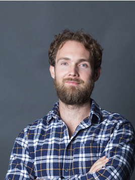
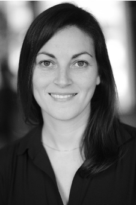

August 3 - August 5, 2020
12th International Workshop on Bio-Design Automation
Proceedings, program, and recorded talks are available!
Keynote Speakers: Dr. Alec Nielsen and Dr. Nili Ostrov
Covid-19
As the scope of the global health crisis has become evident, the IWBDA Planning Committee believes it is prudent to postpone IWBDA 2020 to August 3-5 and hold the meeting online, with abstracts due June 5th.
We are currently considering a variety of ways to make the event interactive, engaging, and accommodating across different time zones. There will be a small fee for PIs and industry members to cover software fees and annual IWBDA expenses. Student attendance will be no charge.
About IWBDA
The Twelfth International Workshop on Bio-Design Automation (IWBDA) will bring together researchers from the synthetic biology, systems biology, and design automation communities to discuss concepts, methodologies and software tools for the computational analysis and synthesis of biological systems.
The field of synthetic biology, still in its early stages, has largely been driven by experimental expertise, and much of its success can be attributed to the skill of the researchers in specific domains of biology. There has been a concerted effort to assemble repositories of standardized components; however, creating and integrating synthetic components remains an ad hoc process. Inspired by these challenges, the field has seen a proliferation of efforts to create computer-aided design tools addressing synthetic biology's specific design needs, many drawing on prior expertise from the electronic design automation (EDA) community.
The IWBDA offers a forum for cross-disciplinary discussion, with the aim of seeding and fostering collaboration between the biological and the design automation research communities.
IWBDA is organized by the non-profit Bio-Design Automation Consortium (BDAC). BDAC is an officially recognized 501(c)(3) tax exempt organization.
Topics of interest include:
- Design methodologies for synthetic biology.
- Standardization of biological components.
- Automated assembly techniques.
- Computer-aided modeling and abstraction techniques.
- Engineering methods inspired by biology.
- Domain specific languages for synthetic biology.
- Data exchange standards and models for synthetic biology.
Venue
IWBDA 2020 will be held online using Zoom.
Registration
IWBDA 2020 will be conducted virtually using Zoom. You must register for a free Zoom account to help facilitate the meeting. Please contact us with any registration questions.
Proceedings
Recorded Talks
Program
All times EDT. Conference to be conducted over Zoom.
Monday, August 3rd
10:30 - 10:45 Welcome & Opening Remarks Eric Young (WPI)
10:45 - 10:50 Introduction to BDAthalon Prashant Vaidyanathan (Microsoft Research)
10:50 - 12:10 Session I: Design Automation, Chair: Marilene Pavan
- 10:50-11:10 gRNA-SeqRET: Genome-wide guide RNA design and sequence extraction
Lisa Simirenko, Ernst Oberortner, Ian K. Blaby, and Jan-Fang Cheng - 11:10-11:30 Genetic Circuit Design Automation involving Structural Variants and Parameter Statistics
Tobias Schladt, Erik Kubaczka, Nicolai Engelmann, Christian Hochberger, and Heinz Koeppl - 11:30-11:50 Laboratory Protocol Automation: A Modular DNA Assembly and Bacterial Transformation Case Study
Rita Chen, Nicholas Emery, Marilene Pavan, and Samuel Oliveira - 11:50-12:10 SBOLCanvas: A Visual Editor for Genetic Designs
Logan Terry, Jared Earl, Sam Thayer, Samuel Bridge, and Chris Myers
12:10 - 13:00 Meal / Zoom Social Hour
13:00 - 14:45 SBOL3 Workshop
15:00 - 16:00 Live Keynote I: Dr. Alec Nielsen (Asimov)
- Title: Machine-guided Design of Genetic Circuits
- Abstract: Cells use genetically encoded circuits to regulate metabolism, communicate with each other, and generate spatial patterns. Synthetic genetic circuits enable advanced biotechnology applications, but are challenging to design for many reasons: a lack of high-performance genetic parts, inaccurate biophysical simulations, and inefficient algorithms for searching the genetic design space. In this talk, we build upon our previous work in genetic circuit design automation by developing improved biophysical simulators and genetic algorithm-based circuit generators. Using this approach, we achieve state-of-the-art performance in computational circuit design and generalize the method to analog and temporal circuits.
16:00 - 17:00 Mini-talks and Panel discussions, Chair: TBD
- Design Abstraction
- BioCRNpyler: Compiling Chemical Reaction Networks from Parts in Diverse Contexts with Python
William Poole, Ayush Pandey, Andrey Shur, Zoltan Tuza, and Richard Murray - Describing engineered biological systems withSBOL3 and ShortBOL2
Matthew Crowther, Lewis Grozinger, James McLaughlin, Goksel Misirli, Jacob Beal, Bryan Bartley, Angel Goni-Moreno, and Anil Wipat - SBModEns: A Modular Toolbox for Model Building, Reduction, Analysis and Simulation in System Biology
Fernando Nóbel Santos Navarro, Jesús Picó, and Jose Luis Navarro
- BioCRNpyler: Compiling Chemical Reaction Networks from Parts in Diverse Contexts with Python
- Sequence Design
- Accurate, Complete, and Contiguous Engineered Yeast Genomes with Prymetime
Joseph Collins, Kevin Keating, Tom Mitchell, Bryan Bartley, Nicholas Roehner, and Eric Young - Decodon Calculator: Degenerate Codon Set Design for Protein Variant Libraries
Dimitris Papamichail, Nicholas Carpino, Tomer Aberbach, and Georgios Papamichail - Automation of polycistronic small RNA design through Golden Gate assembly
Christoph Wagner, Uriel Urquiza-García, and Matias Zurbriggen - Detecting Co-Occurring Signatures of Engineering in Single Cells with Targeted Sequencing
Aaron Adler, Adam Abate, Brian Basnight, Joseph Collins, Benjamin Demaree, Kevin Keating, Xiangpeng Li, Tyler Marshal, Thomas Mitchell, David Ruff, Allison Taggart, Shu Wang, Daniel Weisgerber, Eric Young, and Nicholas Roehner
- Accurate, Complete, and Contiguous Engineered Yeast Genomes with Prymetime
- Microfluidics
- Active Learning for Efficient Microfluidic Design Automation
David McIntyre, Ali Lashkaripour, and Douglas Densmore - Efficient Large-Scale Microfluidic Design-Space Exploration: From Data to Model to Data
Ali Lashkaripour, David McIntyre, and Douglas Densmore - A Droplet-Based Microfluidic Lab Automation for Biosynthetic Pathway Optimization
Kosuke Iwai, Megan Garber, Jess Sustarich, Peter W. Kim, William R. Gaillard, Kai Deng, Trent Northen, Hector Garcia-Martin, Paul D. Adams, and Anup K. Singh
- Active Learning for Efficient Microfluidic Design Automation
Tuesday, August 4th
10:30 - 12:10 Session II: Pipelines, Chair: Bryan Bartley
- 10:30-10:50 Design Automation Workflows for Synthetic Biology and Metabolic Engineering: The Galaxy-SynBioCAD Portal
Jean-Loup Faulon, Thomas Duigou, Melchior du Lac, Joan Herisson, and Pablo Carbonell - 10:50-11:10 Automation of a DOE Design Workflow in SyntheticBiology - A Comparative Study
Alexis Casas, Charles Motraghi, Matthieu Bultelle, and Richard Kitney - 11:10-11:30 Round-Trip: An Automated Pipeline for Experimental Design, Execution, and Analysis
Daniel Bryce, Robert P. Goldman, Matthew Dehaven, Jacob Beal, Tramy Nguyen, Nicholas Walczak, Mark Weston, George Zheng, Josh Nowak, Joe Stubbs, Matthew Vaughn, Niall Gaffney, and Chris Myers - 11:30-11:50 Integrated Decision-Making to Detect DNA Engineering in Yeast
Sancar Adali, Aaron Adler, Joel Bader, Joseph Collins, Yuchen Ge, John Grothendieck, Thomas Mitchell, Anton Persikov, Jonathan Prokos, Richard Schwartz, Mona Singh, Allison Taggart, Benjamin Toll, Stavros Taskalidis, Daniel Wyschogrod, Fusun Yaman, Eric Young, and Nicholas Roehner - 11:50-12:10 The Synthetic Biology Knowledge System
Jeanet Mante, Chris Myers, Eric Yu, Mai H. Nguyen, Gaurav Nakum, Jiawei Tang, Xuanyu Wu, Eric Young, Kevin Keating, Bridget T. McInnes, Nicholas E. Rodriguez, Jacob Jett, J. Stephen Downie, Brandon Sepulvado, and Logan Terry
12:10 - 13:00 Meal / Zoom Social Hour
13:00 - 14:45 BDAthlon breakouts
15:00 - 16:00 Live Keynote II: Dr. Nili Ostrov (Harvard Medical School)
- Title: Reading and Writing Non-canonical Microbial Genomes
- Abstract: The ability to make radical and comprehensive genomic changes opens new avenues for understanding biological principles and for construction of synthetic genomes not found in nature. In this talk, I will discuss development of high-throughput methods for reading and writing entire microbial genomes. I will describe methods for ‘bottom up’ writing of a virus-resistant E. coli with an altered genetic code. In addition, I will present enabling genetic tools for rapid ‘top down’ reading of gene function in the non-model marine bacterium Vibrio natriegens, the fastest dividing free-living organism known. These projects demonstrate the need for robust systems for large-scale genome manipulations to accelerate design-build-test of non-canonical organisms.
16:00 - 17:00 Mini-talks and Panel discussions, Chair: TBD
- Knowledge Engineering
- Intent Parser: a tool for codifying experiment design
Tramy Nguyen, Nicholas Walczak, Jacob Beal, Daniel Sumorok, and Mark Weston - Collaborative Terminology: SBOL Project Dictionary
Jacob Beal, Daniel Sumorok, Bryan Bartley, and Tramy Nguyen - The Social and Conceptual Organization of Synthetic Biology Ethics
Brandon Sepulvado, Jacob Jett, and J. Stephen Downie - Discovering Content through Text Mining for a Synthetic Biology Knowledge System
Mai Nguyen, Bridget McInnes, Eric Young, Gaurav Nakum, Jiawei Tang, Xuanyu Wu, Nicholas Rodriguez, and Kevin Keating
- Intent Parser: a tool for codifying experiment design
- Synthetic Biology Open Language
- VisBOL 2.0 - Improved Synthetic Biology Design Visualization
Benjamin Hatch, James McLaughlin, James Scott-Brown, and Chris Myers - Sequence-based Searching For SynBioHub Using VSEARCH
Eric Yu, and Chris Myers - Analysis of the SBOL iGEM Data Set
Jeanet Mante, Chris Myers, and James Mclaughlin
- VisBOL 2.0 - Improved Synthetic Biology Design Visualization
- Metabolic Engineering
- Dynamic pathway regulation: extended biosensor and controller tuning with multiobjective optimization
Yadira Boada, Alejandro Vignoni, Ana Fraile, Jesús Picó, and Pablo Carbonell - Enhanced Microbial Production of Valuable NaturalProducts Through Computational Metabolic Models
Michael Cotner, Zhen Zhang, and Jixun Zhan
- Dynamic pathway regulation: extended biosensor and controller tuning with multiobjective optimization
Wednesday, August 5th
10:30 - 12:10 Session III: Circuits & Models, Chair: Thomas Gorochowski
- 10:30-10:50 Multistable and dynamic CRISPRi-based synthetic circuits
Javier Santos-Moreno, Eve Tasiudi, Joerg Stelling, and Yolanda Schaerli - 10:50-11:10 Robust control of biochemical reaction networks via stochastic morphing
Tomislav Plesa, Guy-Bart Stan, Thomas Ouldridge, and Wooli Bae - 11:10-11:30 Genetic Circuit Hazard Analysis Using STAMINA
Lukas Buecherl, Jeanet Mante, Zhen Zhang, Brett Jepsen, Riley Roberts, Pedro Fontanarrosa and Chris J. Myers - 11:30-11:50 Minimal model for protein expression accounting for metabolic burden
Fernando Nóbel Santos Navarro, and Jesús Picó - 11:50-12:10 Bacteria mastering the tic-tac-toe game through synthetic adaptive gene circuits
Adrian Racovita, Satya Prakash, Clenira Varela, Mark Walsh, Roberto Galizi, Mark Isalan, and Alfonso Jaramillo
12:10 - 13:00 Meal / Zoom Social Hour
13:00 - 14:45 SBOL Visual workshop
15:00 - 16:00 Guided Discussion, Chair: Prashant Vaidyanathan
16:00 - 17:00 Awards / Closing
BDAthlon
We are excited to announce that this year, the Bio-Design Automation Consortium and the NONA Research foundation will be hosting a year-long Bio-Design Automation hackathon – the BDAthlon! This year’s BDAthlon is a special programming contest in which teams work to solve specific computational problems identified by members of the synthetic biology. To facilitate this, we will be kicking off the BDAthlon with a Special session at IWBDA 2020 where participants can brainstorm ideas for projects!
IWBDA 2020 Special SessionWe believe that no idea is too big or too small for the BDAthlon! At IWBDA 2020, we’d like to invite the participants to come together and identify open computational problems in the field of synthetic biology and bio-design automation. There will be a 1 hour 45 minute breakout session on Tuesday 4th August 2020, where IWBDA participants can join one of the following 5 tracks:
- Design – Build – Test – Learn Pipelines
- Lab Automation
- Microfluidics
- Circuits & Models
- Open track
The goal of the breakout session is to come up with project ideas for tools, scripts, APIs, frameworks, software that could be potentially useful for the community. Participants of the Special session will get a chance to present their ideas in a 1 hour guided session on Wednesday 5th August 2020. These project ideas will be maintained by Nona in Nona’s Github organization.
BDAthlon 2020The BDAthlon is a great opportunity for the synthetic biology and the open-source community to come together and work on the computational projects identified at IWBDA 2020. There are no restrictions for size of teams, number of participants, or number of projects a participant can work on.
The Nona foundation plans on organizing regular summits throughout the year where participants can:
- Allocate a few focussed days where they can work on their BDAthlon projects.
- Present their progress and reach out to the community if they require any additional resources.
The BDAthlon will end next year at the start of IWBDA 2021, where we would like to encourage participants to submit their progress and milestones as featured abstracts which would be published in the proceedings of IWBDA. The winners of the BDAthlon will be announced at the end of IWBDA 2021.
If you have any questions or suggestions, or would like to volunteer, please reach out here: info@nonasoftware.org
Sponsors
Algorithm

Key Dates
- Abstract submission deadline:
March 13, 2020April 10, 2020June 5, 2020 - IWBDA: August 3-5, 2020
Call for Papers
Call for papers : Link
Please submit all abstracts here https://www.easychair.org/conferences/?conf=iwbda20. If you do not have an easy chair account, please create one by following the instructions specified here.
Abstract Details:
- Abstracts should be two pages long and referenced. For your convenience, we have created a template for IWBDA Abstracts in Overleaf which can be found here. Indicate Research track when prompted. You can also download a sample pdf template here.
- While submitting your abstract for review, if you are using latex please use
\documentclass[sigchi, review]{acmart} - If your abstract is accepted, please use
\documentclass[sigchi]{acmart} - Inclusion of figures is encouraged.
- Please indicate whether you would like your abstract considered for a poster presentation, an oral presentation, or both.
- Include the full names, affiliations and contact information of all authors.
- Abstracts should be submitted in pdf format and should not exceed two pages.
Abstracts will be reviewed by the Program Committee. Those that are selected for oral and poster presentations will distributed to workshop participants and posted on the workshop website.
Call for Workshops
New for 2020!
Call for workshops : Link
Applicants may propose to conduct either half day (8am-12pm, 1pm-5pm) or full day workshops of interest to the IWBDA community. Proposals should be submitted here https://www.easychair.org/conferences/?conf=iwbda20. Indicate Workshop track when prompted. If you do not have an easy chair account, please create one by following the instructions specified here.
Proposals need not follow the abstract template. Instead, please submit a 1/2 - 1 page description of the workshop, including activities, learning objectives, and why your workshop is of interest to the community. Also please include a brief agenda and contact info for the organizers.
Allan Kuchinsky IWBDA Scholarship
This year IWBDA will be soliciting applications for the 6th annual Allan Kuchinsky Internation Workshop on Bio-Design Automation Scholarship. Allan was a tremendous supporter of both synthetic biology as well as design automation. His contributions to projects such as Cytoscape and Eugene as well as numerous Agilent efforts was crucial in helping academic and industrial researchers develop state-of-the-art technologies and tools to lay the foundation for this field. This scholarship in some small measure attempts to recognize his tireless efforts by highlighting a student who shares Allan's vision for the field. This scholarship will provide support for one recipient to attend IWBDA (registration, airfare, hotel, and small travel stipend) along with a recognized poster presentation slot. Interested individuals should provide the following: IWBDA abstract, resume/CV, essay, and recommendation letter. For details, including how to apply, please see this PDF.
The Allan Kuchinsky scholarship is generously sponsored by Agilent.

Keynote Speakers
Alec Nielsen
Dr. Alec Nielsen is co-founder and CEO of Asimov, a Boston-based mammalian synthetic biology company that spun out of MIT in 2017. Alec holds a B.S. in Electrical Engineering and Bioengineering from the University of Washington and a Ph.D. from MIT Biological Engineering. His work focuses on computer-aided design of complex cellular functions, scalable biochemistries for synthetic biology, and machine learning applications in genetic design and biosecurity.
Nili Ostrov
Dr. Nili Ostrov is a postdoctoral fellow in the laboratory of Prof. George Church at Harvard Medical School, where she is constructing synthetic microbial genomes. She is broadly interested in using non-canonical organisms for clinical, agricultural and bioindustrial applications. Nili is a leading member of the Technology Working Group for the Genome Project Write (GP-write) international consortium.
Organizing Committee
Contact us at: iwbda-exec AT lists.bio-design-automation.org
- General Chair - Eric Young, Worcester Polytechnic Institue
- Local Chair - Natalie Farny, Worcester Polytechnic Institue
- Program Committee Chair - Bryan Bartley, BBN Technologies
- Co-Web Chair - Aaron Adler, BBN Technologies
- Co-Web Chair - Prashant Vaidyanathan, Microsoft Research
- Finance Chair - Traci Haddock-Angelli, iGEM Foundation
- Past Co-General Chair - Pietro Lio', University of Cambridge
- Past Co-General Chair - Anil Wipat, Newcastle University
- Past Co-General Chair - Jim Haseloff, University of Cambridge
- Past Co-General Chair - Andrew Phillips, Microsoft Research
- Past Co-General Chair - Sara-Jane Dunn, Microsoft Research
- Past Co-Local Chair - Alexandra Ting, University of Cambridge
- Past Co-Local Chair - Helena Andres Terre, University of Cambridge
- Past Co-Local Chair - Zuliani Paolo, Newcastle Cambridge
- Past Program Committee Chair - Prashant Vaidyanathan, Microsoft Research
- Past Publication Chair - Prashant Vaidyanathan, Microsoft Research
- Past Co-Web Chair - Aaron Adler, BBN Technologies
- Past Co-Web Chair - Prashant Vaidyanathan, Microsoft Research
- Past Finance Chair - Traci Haddock-Angelli, iGEM Foundation
Email List
Sign up for the announcements email list here.
Anti-harassment Policy
The International Workshop on Bio-Design Automation will not tolerate harassment of workshop participants. Examples of such prohibited practices would include gossiping, slurs, offensive or derogatory comments, or other verbal or physical conduct. This includes sexual harassment as defined as "unwelcome sexual advances, requests for sexual favors, and other verbal or physical conduct of a sexual nature" not only when the conduct is made as a condition of workshop participation ("quid pro quo" harassment), but when the conduct creates an intimidating, hostile, or offensive workshop environment. IWBDA participants who feel they are being harassed by participants, organizers, or support staff should make it clear to the individual(s) that such behavior is offensive and unwelcome. Any participant who believes he or she has been subjected to harassing conduct can report the matter to the IWBDA organizing committee or the Bio-Design Automation Consortium (BDAC) executive committee.
Related Synthetic Biology Conferences
- Mammalian Synthetic Biology Conference : May 1, 2021 in Edinburgh, UK
- Synthetic Biology: Engineering, Evolution & Design (SEED) Conference: June 22-26, 2019 in San Fransisco, CA
- iGEM 2020 Competition and Giant Jamboree October 2020 Virtually
Past Years
- 11th International Workshop on Bio-Design Automation (IWBDA 2019): Cambridge, UK, July 8-July 10, 2019
- 10th International Workshop on Bio-Design Automation (IWBDA 2018): Berkeley, CA, July 31-August 3, 2018
- 9th International Workshop on Bio-Design Automation (IWBDA 2017): Pittsburgh, PA, August 8-10, 2017
- 8th International Workshop on Bio-Design Automation (IWBDA 2016): Newcastle University, Newcastle upon Tyne, UK, August 16-18, 2016
- 7th International Workshop on Bio-Design Automation (IWBDA 2015): Seattle, WA, August 19-21, 2015
- 6th International Workshop on Bio-Design Automation (IWBDA 2014): Boston, MA, June 11-12, 2014
- 5th International Workshop on Bio-Design Automation (IWBDA 2013): Imperial College, London, UK, July 12-13, 2013
- 4th International Workshop on Bio-Design Automation (IWBDA 2012): Moscone Center, San Francisco, CA, July 3-4, 2012
- 3rd International Workshop on Bio-Design Automation (IWBDA 2011): San Diego Convention Center, San Diego, CA, June 6-7, 2011
- 2nd International Workshop on Bio-Design Automation (IWBDA 2010): Anaheim, CA, June 14-15, 2010
- 1st International Workshop on Bio-Design Automation (IWBDA 2009): Moscone Center, San Francisco, CA, July 27, 2009